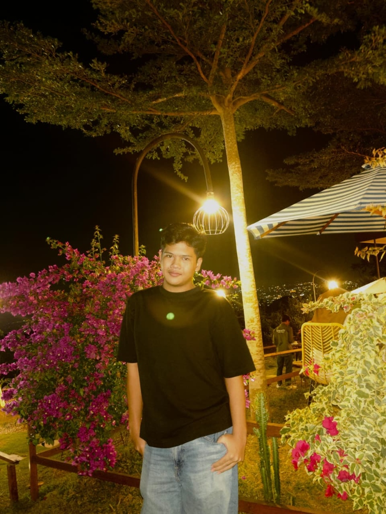

Merancang pengalaman digital.
Membangun antarmuka yang efisien.
UI/UX Researcher & Frontend Developer yang berfokus menciptakan pengalaman digital yang intuitif, jelas, dan mudah digunakan. Menggabungkan riset mendalam dengan presisi teknis.

Merancang
dengan tujuan.
Saya percaya bahwa desain terbaik adalah desain yang terasa alami dan intuitif. Hasil dari riset mendalam, pemecahan masalah dengan empati, serta eksekusi yang presisi. Pendekatan saya berfokus pada memahami struktur antarmuka secara mendalam sebelum menerapkan lapisan visual.
Baik saat memetakan alur pengguna maupun merancang arsitektur kode frontend yang bersih, tujuannya tetap sama: membangun produk digital yang mempermudah pengguna.
Karya Pilihan
Studi Kasus & Proyek

Student Service Hub
Merancang ulang pengalaman administrasi akademik agar lebih cepat dan jelas. Berfokus pada riset pengguna yang mendalam dan arsitektur informasi yang intuitif.
Baca Studi Kasus arrow_forwardSmartUMKM
Platform komprehensif yang menghubungkan pelaku UMKM dengan perangkat digital. Membangun arsitektur frontend responsif dengan pola desain yang ramah pengguna.
Lihat Proyek arrow_forward
Hubungi Saya.
Punya ide proyek, pertanyaan, atau ingin berdiskusi? Silakan hubungi saya melalui telepon atau email.